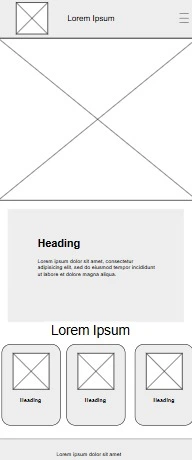
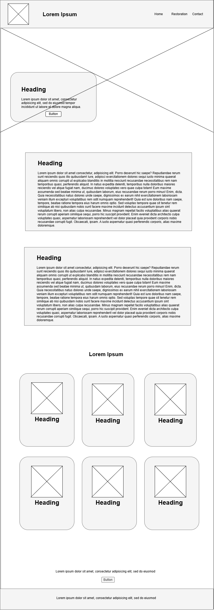

Site Name
The Restored Gospel of Jesus Christ
This name was chosen because it clearly communicates the central theme of the website: the restoration of the gospel of Jesus Christ through the Prophet Joseph Smith.
Site Purpose
The website will provide information about:
- Principles of the Restoration: Key doctrines and teachings
- The History: How the restoration came about
- The Project: Overview of the website project
- Personal Testimony: A brief testimony about the restoration
- Contact: A page where visitors can ask questions
Scenarios
❓ What is the Restoration of the Gospel?
The website will provide a clear explanation of what the restoration means and why it is important.
❓ How can I know if this page explains the truth?
The website will invite visitors to pray and ask God if these things are true, following the promise in Moroni 10:4-5.
❓ Where can I contact to receive more information?
A contact page will be available where visitors can submit questions and receive more information.
Color Schema
Usage: Primary for headers, Secondary for accents, Tertiary and Quaternary for highlights and backgrounds.
Typography
Merriweather (Bold Italic) — Used for Titles and Headers
Merriweather (Regular) — Used for Subheadings
Lora (Regular) — Used for Paragraphs and Body Text
Wireframe


Note: The wireframe shows the basic layout for mobile devices. A desktop version will also be a single column, except for a special gallery section that displays images with titles in a 3-column, 2-row grid.